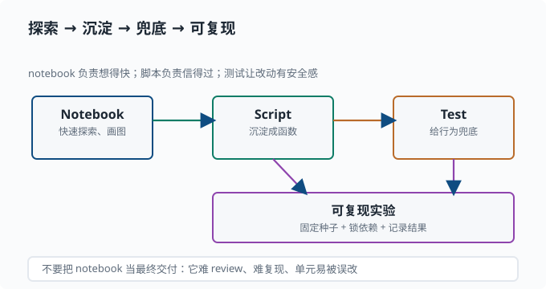

用 Python 做研究：Notebook、绘图与复现
目标：把前面学的语法、NumPy、工程纪律组合成一套"快速验证想法"的工作流。读完这一页，你能用一个 notebook 做交互探索、用 matplotlib 画图、把临时脚本整理成可复现的实验，并知道在哪里停下、在哪里抽象。
为什么研究需要一套固定工作流
研究不是"写一个大程序一次跑完"，而是一连串小实验：改个参数、看个图、验证一个假设、再调整。如果每次都要重写整个脚本，你很快就会疯。好的研究工作流让你能"快速试、清楚看、可信复现"。
一个关键心态：
交互探索（notebook）负责"想得快"，脚本和测试负责"信得过"。两者不是替代关系，而是探索 → 沉淀的一条路径。
Notebook 与脚本的分工
Jupyter Notebook / VS Code 的交互单元适合：
- 快速试一段代码、看中间结果。
- 画图、可视化、总结经验。
- 教学和探索：边想边跑。
普通 Python 脚本适合：
- 可重复运行的正式实验。
- 被测试覆盖的模块逻辑。
- 需要长时间运行、无人值守的任务。
经验法则：在 notebook 里探索，确认可行后沉淀成脚本 + 函数 + 测试。 不要让 notebook 成为最终交付物——它难 review、难复现、单元很容易被误改。
把"探索 → 沉淀 → 兜底 → 可复现"这条路径画出来，就能看出 notebook 只占其中最灵活、也最"临时"的一环：

notebook 的价值在想得快：改一行、看一个图、验证一个假设。一旦想法成立，就把它从"临时交互"沉淀成"可被测试的脚本逻辑"——这样它才能被正式运行、被测试覆盖、被版本管理。箭头指向的单向性正是提醒你：好的研究代码是"从探索里长出来"，而不是"把整本 notebook 变成最终代码"。
让 notebook 可复现
如果非要用 notebook，至少做到：
- 每个 notebook 开头固定随机种子。
- 用
print(shape)/ 明确的输出标记关键结果。 - 注明依赖版本和执行顺序。
- 不要藏着"隐式修改全局状态"——每个单元要尽量独立。
绘图：让数据说话
matplotlib 是最常用的绘图库。最小例子：
import matplotlib.pyplot as plt
import numpy as np
x = np.linspace(0, 10, 100)
y = np.sin(x)
plt.figure(figsize=(6, 4))
plt.plot(x, y, label="sin(x)")
plt.xlabel("x")
plt.ylabel("y")
plt.title("正弦曲线")
plt.legend()
plt.tight_layout()
plt.show()
研究绘图的要点：
- 加标签：坐标轴、图例、标题一个不能少，否则图谁看都看不懂。
- 用
scatter画散点、hist画直方图、imshow画矩阵/图片——选对图型。 - 保存时
plt.savefig("xxx.png", dpi=150)带上dpi，保证清晰。 - 别在 loop 里反复
plt.show()阻塞，批量出图用savefig。
图像的本质就是矩阵：灰度图是二维数组，彩色图是 (H, W, 3) 的三维数组。plt.imshow 直接展示数组，这就是你后面看"权重可视化""注意力热力图"（05）的入口。
一个完整的研究小流程
把探索、计算、画图、保存串起来：
import json
import numpy as np
import matplotlib.pyplot as plt
def run(seed: int, n: int = 5000):
rng = np.random.default_rng(seed)
samples = rng.normal(loc=5.0, scale=2.0, size=n)
# 计算数字特征
summary = {
"n": int(n),
"mean": float(samples.mean()),
"std": float(samples.std()),
}
# 出图
fig, ax = plt.subplots()
ax.hist(samples, bins=50, alpha=0.6)
ax.axvline(summary["mean"], color="red", label="mean")
ax.legend()
ax.set_title(f"正态样本 seed={seed}")
fig.savefig("hist.png", dpi=150)
# 持久化结果
with open("summary.json", "w") as f:
json.dump(summary, f, indent=2)
print(summary)
if __name__ == "__main__":
run(seed=42)
注意这里用了 np.random.default_rng(seed)——这是比 np.random.seed 更推荐的写法，它能创建独立的随机数生成器，避免污染全局状态。研究里"每个实验一个独立的 rng"是很干净的习惯。
从探索到沉淀：什么时候抽象
不是所有代码都要立刻抽象成函数，但出现以下信号就该抽象：
- 同一段逻辑出现了两次以上。
- 一段逻辑你要测试它（比如一个数值计算函数）。
- 一段逻辑需要复用（比如在多个实验之间共用）。
判断标准很简单：你会不会想单独测它、会不会想在别处用它。 会，就抽成带类型标注的函数；不会，就留在原地。
这套"探索 → 沉淀"的节奏可以用一个循环来概括，研究就是在它里滚动前进：
flowchart LR
E["在 notebook 里试想法"] --> P["验证可行"]
P --> S["沉淀成函数 + 脚本"]
S --> T["写测试兜底"]
T --> R["跑实验、出图、存结果"]
R --> E
依赖与虚拟环境
研究项目要在隔离环境里装依赖，避免不同项目互相污染：
python -m venv .venv
source .venv/bin/activate # Windows: .venv\Scripts\activate
pip install numpy matplotlib jupyter
pip freeze > requirements.txt # 记录版本
用虚拟环境的理由：不同项目可能需要不同版本的同一库，互相独立。记录 requirements.txt 是为了可复现。在 pnpm 的世界里，pnpm-lock.yaml 起同样的作用——锁定版本，保证一致。
写一个研究阶段的脚本骨架
随着项目成长，你值得一个更完整的骨架：
research/
src/
__init__.py
pipeline.py 核心逻辑（可测试）
tests/
test_pipeline.py
config.py 种子与参数
run_experiment.py 入口脚本
output/
hist.png
summary.json
README.md
跑实验时记下：种子、参数、输入数据、依赖版本、输出。有了这套，你就能回答研究里最常问的三个问题："怎么跑？" "上次用了什么？" "这个结果可信吗？"
动手：把一次探索沉淀成可复现实验
目标：走完"notebook 探索 → 固定成脚本 → 记录环境"的最小闭环，体验研究工作流的完整一圈。
任务：
-
在任意环境（脚本或 notebook 均可）里探索：用
np.random.default_rng(42)生成 100 个正态样本x，再生成y = 2*x + 1 + rng.normal(0, 0.5, 100)。画出散点图，直观确认线性关系。import numpy as np import matplotlib.pyplot as plt rng = np.random.default_rng(42) x = rng.normal(0, 1, 100) y = 2 * x + 1 + rng.normal(0, 0.5, 100) plt.scatter(x, y, alpha=0.7, label="样本") plt.xlabel("x"); plt.ylabel("y"); plt.title("线性关系探索") plt.legend(); plt.savefig("explore.png", dpi=120) -
把探索结论固化成脚本
run_experiment.py：参数（种子、样本数、斜率）放命令行或配置，输出写进output/（图 +summary.json）。 -
用最小二乘（
np.polyfit(x, y, 1)）估计斜率和截距，写进summary.json，并断言abs(斜率 - 2) < 0.3——把"探索发现"变成"可检验的结论"。 -
记录环境：
pip freeze > requirements.txt（或uv pip freeze）。再跑一遍脚本，确认两次summary.json完全一致——这就是可复现。
检验标准：换一个目录、重新运行脚本，能凭 summary.json + requirements.txt 说出"跑了什么、结果是什么、依赖是什么"。
思考题
- Notebook 和正式脚本的分工是什么？为什么最终交付不建议只依赖 notebook？
- 绘图时为什么要加图例、坐标轴标签和标题？
np.random.default_rng(seed)相比np.random.seed有什么好处？- 什么时候应该把一段临时代码抽象成函数？
参考答案
- Notebook 适合交互探索、可视化、快速试错；正式脚本适合可重复运行、可测试、长期运行的实验。最终交付不应只依赖 notebook，因为它难以 review、单元易被误改、复现和版本管理都较弱；应把验证过的逻辑沉淀成函数 + 测试。
- 因为图是给别人（包括未来的自己）看的。没有图例、坐标轴标签和标题，读者无法知道横纵轴是什么、曲线代表什么，图就失去了传达信息的意义。
default_rng(seed)创建独立的随机数生成器，不会污染全局随机状态，适合在多个实验间隔离；np.random.seed直接改动全局，可能会被别处代码影响。推荐研究代码用独立 rng。- 当一段逻辑出现两次以上、需要单独测试、或需要在多个实验间复用时，就应该抽成带类型标注的函数。判断标准是"你会不会单独测它、会不会在别处用它"。
下一步
- 想在概率上做更多计算 → 01-03 期望与方差。
- 想在数学上补齐工具 → 01-06 梯度与微分。
- 到这里，编程基础已经够你开始跑后面的机器学习练习 → 03 机器学习。
- 想在架构层面真正读懂 deepseek-harness → 10 实战 Lab。